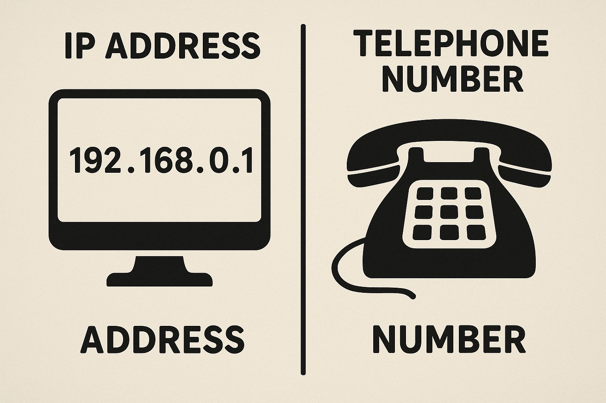
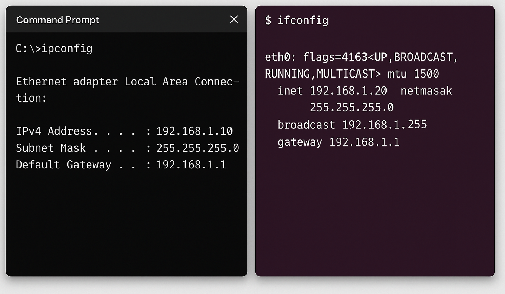
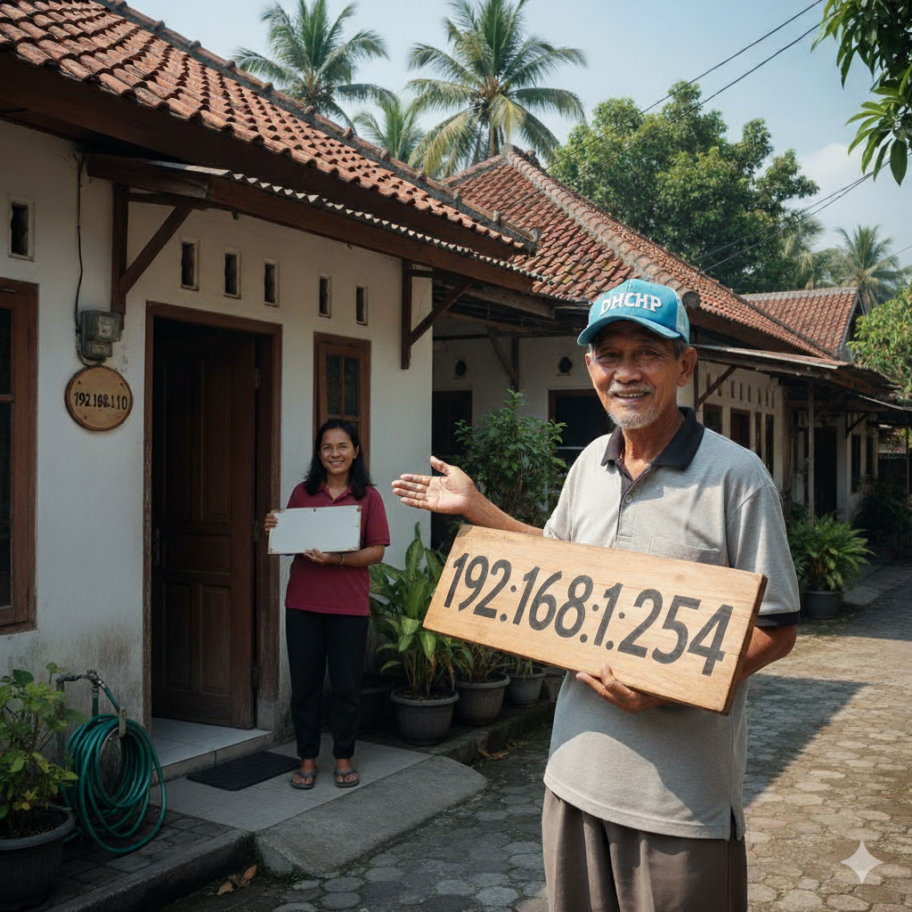
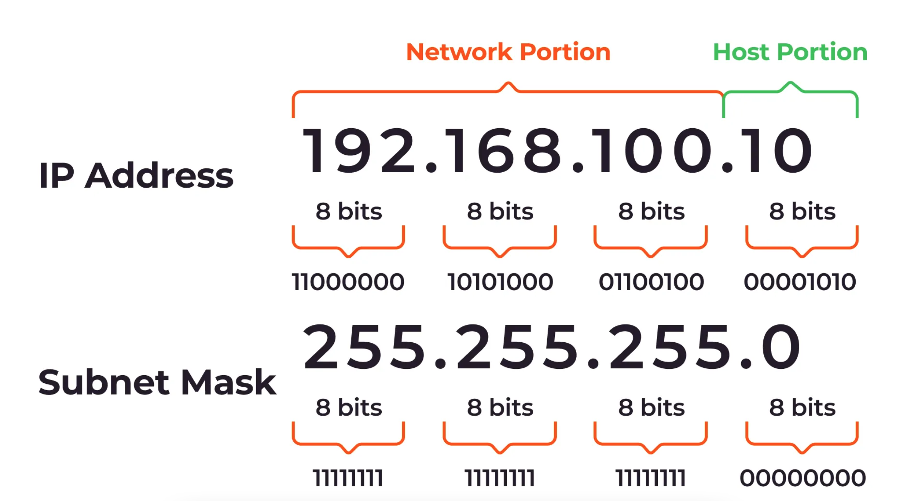
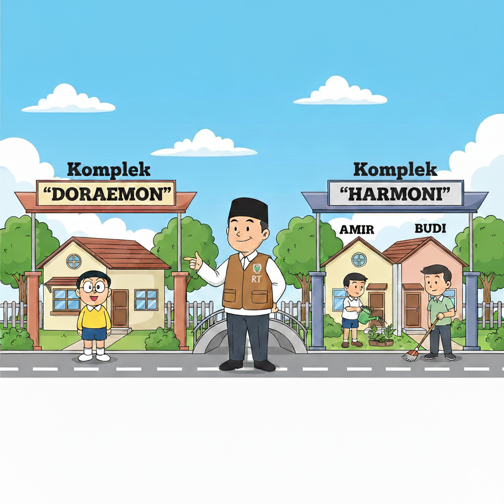
256 Alamat (0-255)
IP : 192.168.1.0
Subnet Mask : 255.255.255.0
Reserved IP : Network Address -> 192.168.1.0
Reserved IP : Broadcast Address -> 192.168.1.255
Jadi : 256 - 2 = 254
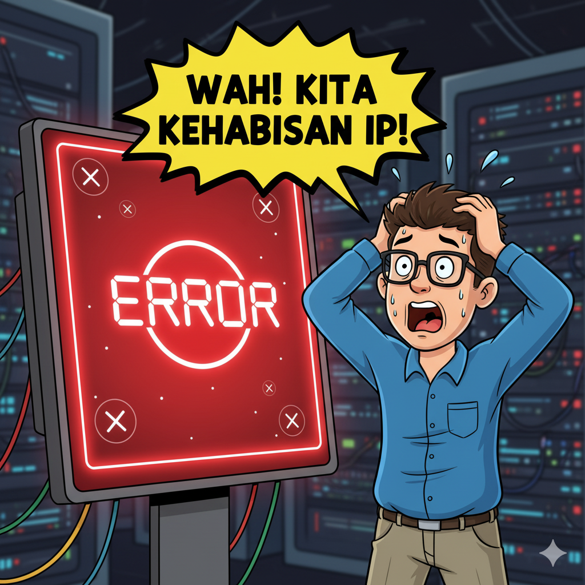
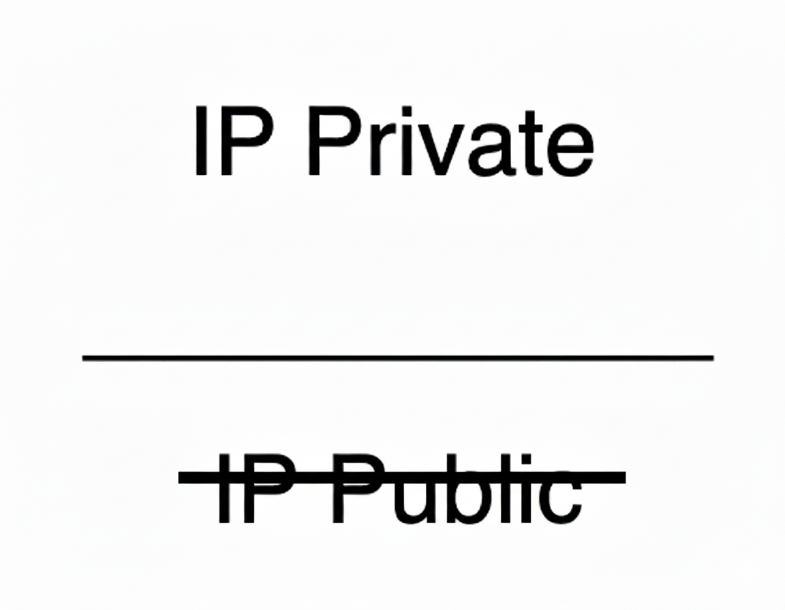
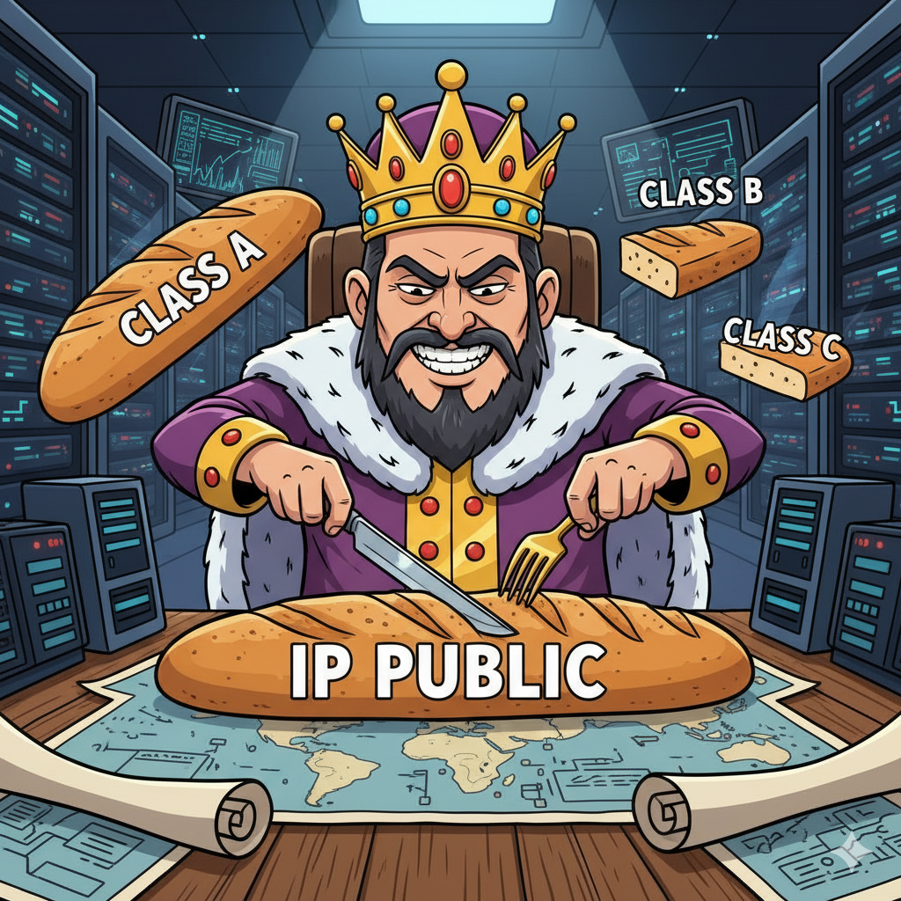
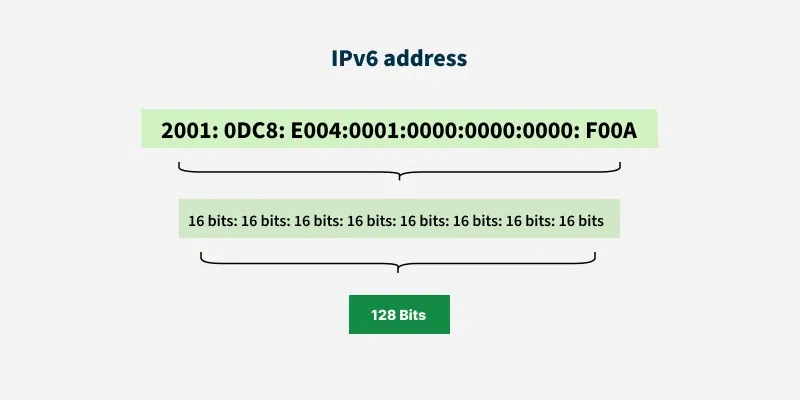
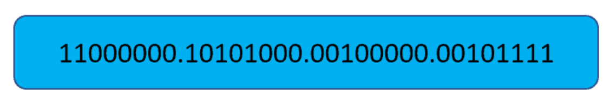
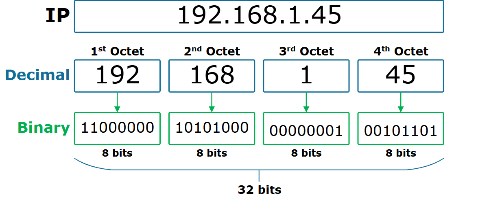
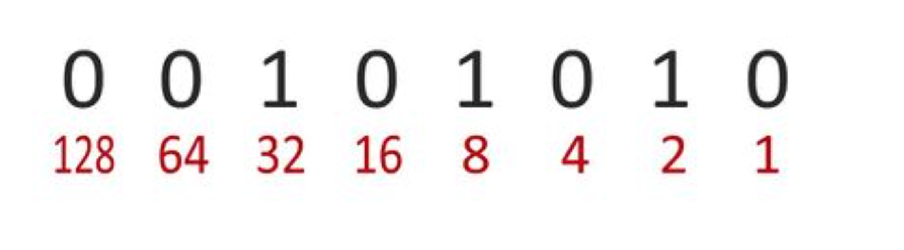
Misal kita punya octet pertama: 11000000
| Nilai | Status |
|---|---|
| 128 | ON |
| 64 | ON |
| 32 | OFF |
| 16 | OFF |
| 8 | OFF |
| 4 | OFF |
| 2 | OFF |
| 1 | OFF |
Tambahkan yang ON: 128 + 64 = 192
kita balik arah — dari decimal ke binary. 172.16.34.3
Ambil 172, cocokkan ke tabel:
| Nilai Bit | Bisa Dikurangin? | Status |
|---|---|---|
| 128 | Ya | ✅ ON |
| 64 | Tidak | ❌ OFF |
| 32 | Ya | ✅ ON |
| 16 | Tidak | ❌ OFF |
| 8 | Ya | ✅ ON |
| 4 | Tidak | ❌ OFF |
| 2 | Tidak | ❌ OFF |
| 1 | Tidak | ❌ OFF |
Hasil akhirnya: 10101000 💻
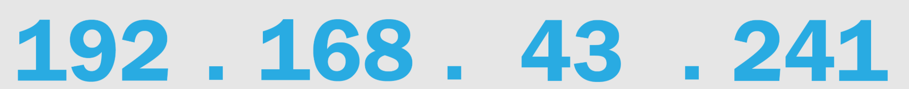
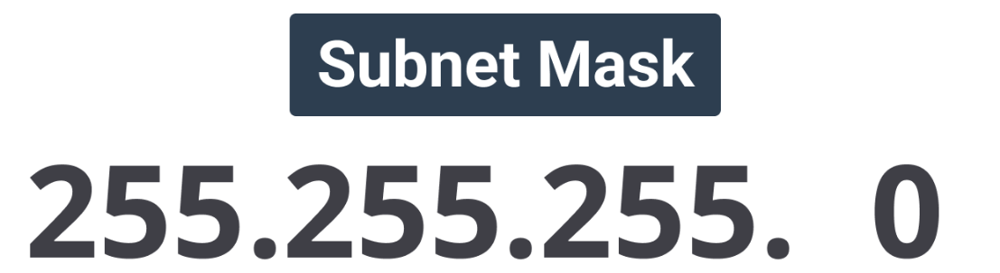
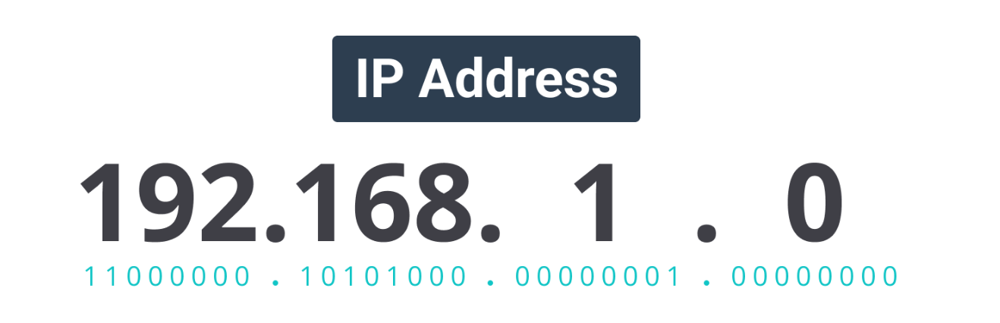
Diketahui terdapat sebuah jaringan dengan alamat 192.168.1.0/24
yang akan digunakan untuk tiga cabang coffee shop.
Setiap cabang memiliki kebutuhan sebanyak 40 host,
yang meliputi:
1. Bagaimana cara melakukan subnetting terhadap jaringan
192.168.1.0/24 agar dapat memenuhi kebutuhan ketiga cabang coffee shop tersebut?
2. Tentukan prefix (CIDR) yang sesuai agar masing-masing jaringan
mampu menampung minimal 40 host.
3. Sertakan hasil perhitungan dan tentukan untuk setiap subnet:
• Network address
• Broadcast address
• Range IP usable
4. Berapa jumlah total alamat yang tersisa dari jaringan utama setelah pembagian subnet dilakukan?
5. Gambarkan secara singkat bagaimana pembagian subnet tersebut berada di dalam blok utama
(192.168.1.0/24).
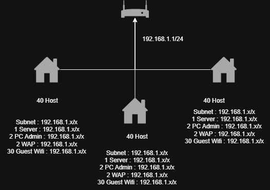
| Coffee Shop | Network Address | CIDR | Range IP | Usable Hosts |
|---|---|---|---|---|
| Coffee 1 | 192.168.1.0 | /26 | 192.168.1.0 - 192.168.1.63 | 62 |
| Coffee 2 | 192.168.1.64 | /26 | 192.168.1.64 - 192.168.1.127 | 62 |
| Coffee 3 | 192.168.1.128 | /26 | 192.168.1.128 - 192.168.1.191 | 62 |
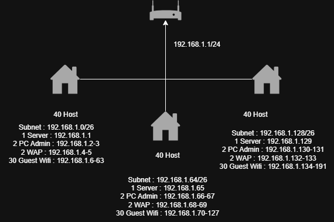
Diketahui terdapat sebuah jaringan dengan alamat 192.168.10.0/27
yang akan digunakan untuk tiga perangkat atau kelompok jaringan kecil berikut:
Jaringan A (Server Room) membutuhkan 14 host
Jaringan B (Admin Office) membutuhkan 6 host
Jaringan C (IoT Devices) membutuhkan 2 host
1. Tentukan prefix (CIDR) yang sesuai untuk masing-masing jaringan agar kebutuhan host terpenuhi.
2. Lakukan pembagian subnet dari jaringan 192.168.10.0/27 berdasarkan kebutuhan terbesar ke terkecil.
3. Tentukan untuk masing-masing jaringan:
• Network address
• Broadcast address
• Range IP usable
4. Berapa jumlah total alamat yang tersisa setelah ketiga jaringan tersebut dialokasikan?
5. Gambarkan secara singkat bagaimana pemetaan subnet dalam satu blok jaringan utama (192.168.10.0/27).
VLSM (Variable Length Subnet Mask) adalah teknik subnetting dalam jaringan komputer yang memungkinkan kita menggunakan subnet mask dengan panjang yang berbeda-beda dalam satu jaringan utama.
Misal jaringan utama: 192.168.10.0/24. Dengan VLSM kita bisa membuat subnet berukuran berbeda sesuai kebutuhan host sehingga alamat IP tidak terbuang.
Subnet A: 192.168.10.0/25 (128 alamat)
Subnet B: 192.168.10.128/26 (64 alamat)
Subnet C: 192.168.10.192/28 (16 alamat)
Bernard Hackwell, CEO dari Hackwell Industries, menyampaikan permintaan sebagai berikut:
“Perusahaan baru saja membuka pabrik baru. Mohon dibuatkan empat jaringan terpisah dengan nama Guest, Robots, Servers, dan Workers.
Setiap jaringan memiliki kebutuhan jumlah host yang berbeda, sedangkan jaringan yang tersedia hanya memiliki alokasi /24.”
Pertanyaan:
Bagaimana cara Anda membagi (subnetting) jaringan /24 tersebut agar dapat memenuhi kebutuhan empat jaringan dengan jumlah host yang berbeda secara efisien?